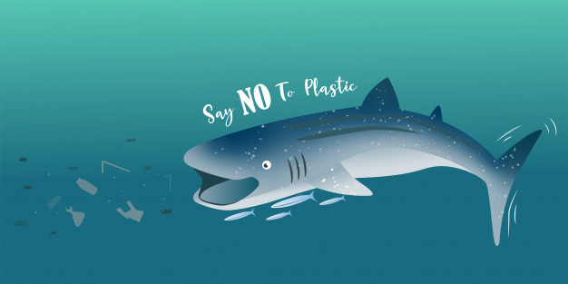

Nous sommes une Association créé en 1999, localisé à Lille à 8 rue de Montaigner qui luttons contre la disparition des baleines dans le monde.
De nombreuse raisons peuvent mener à la disparition de ces mammifères déjà menacés tel que les déchets rejettés à la mer ainsi que le braconnage.
Nous sommes le 25/10/2018 une baleine s'est échouée sur les côtes belges. Les raisons menant à ce phénomène sont diverses. Allant de la fuite de la baleine contre ses braconneurs, de sa peur face aux sonars qui perturbent les sens de la baleine qui entre dans un état de stress entrainant diverses douleurs et paralysies la faisant aller dans de mauvaises directions, de la chaîne alimentaire qui peut être pertubé à cause des plastiques présent dans les océans et ainsi que les problèmes liés à la pêche qui ne respectent pas les quotas et dépassent les limites autorisées.
Pour éviter ces sinistres, nous demandons à tous les collaborateurs parmis nous de rejoindre notre combat en mer pour surveiller les mers contre ses aggressions, ainsi que pour réorentier les baleines qui s'égarent dans leur cap et enfin leur enlever tout possible piège et filet qui peuvent rester coincer sur elles. Cela peut les empêcher de chasser et se déplacer convenablement, ce n'est pas mission facile car cela demande de la dextérité et la confiance de la baleine pour qu'elle panique plus. Mais dans ce combat quotidien, nous espérons ramener une mer plus sûr pour ces cachalots.
